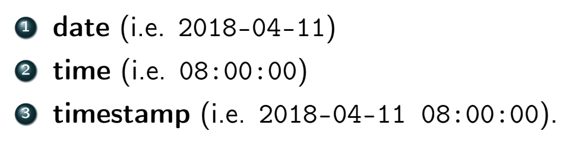

- int
- smallint
- numeric(p,d) - fixed point number which contains p digits, d of which comes after the decimal
- real, double precision
- float(n) - floating point number with precision of at least n digits
- 


:: operator to cast values to another typegpa::decimal(4, 3) AS gpa

psqlpsql commands:


friendsSELECT DISTINCT
L.user_id AS user,
R.friend_user_id AS foaf
FROM friends L
JOIN friends R
ON L.friend_user_id = R. user_id AND
L.user_id != R.friend_user_id;

OUTER is optional
COALESCE(expr that may be NULL, replacement value)


sq is the derived table alias (REQUIRED)average in WHERE rather than using HAVING

INSERT INTO relation VALUES
('val11',..., 'val1n'),
('val21', 'val22',..., 'val2n')...;
INSERT INTO relation (col1name, ..., colnname) VALUES
('val11', ..., 'val1n'),
('val21', ..., 'val2n')...;
UPDATE relation
SET column = new_value
WHERE some_predicate;
UPDATE midterm
SET score = score + (
SELECT 100 - MAX(score)
FROM midterm
);
CONSTRAINT Valid_Enrolldate CHECK (enrolldate > birthdate)